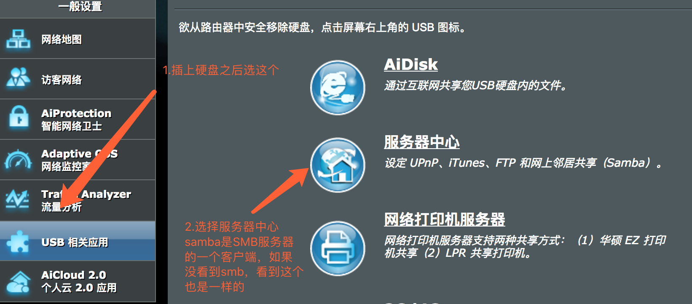
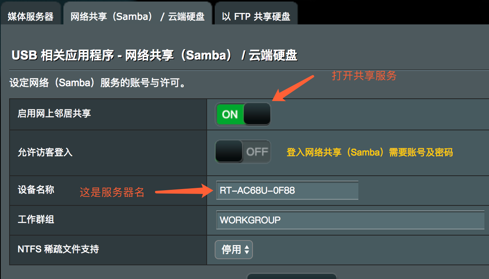

如何在路由器上打开SMB共享 (比前两个都简单一些)
路由器需要有USB外设接口(当然一些路由器自带硬盘的当我没说)，同时有SMB服务器的功能，每个路由器设置都不太一样，不过一般都挺容易，这里用的是华硕的RT-AC68U。
插♂上你的硬盘，然后打开路由器的设置页，你的路由器可能设置页不长这样，那么请看官方的教程。

打开共享即可，服务器名路由器应该会直接给出。用户名和密码一般是你登录用的用户名和密码。
（注意：如果有些路由器用的是匿名登录，那么在app上可以不用填写用户名和密码）
